Gameloft s'engage
Un studio qui agit pour la planète
Des jeux qui font rêver, un studio qui agit pour la planète. Découvrez comment Gameloft réduit son impact environnemental et fait passer le message à des millions de joueurs.
10
studios dans le monde
4
studios passés aux énergies renouvelables en 2024
2021
Année d'adhésion à Playing for the Planet
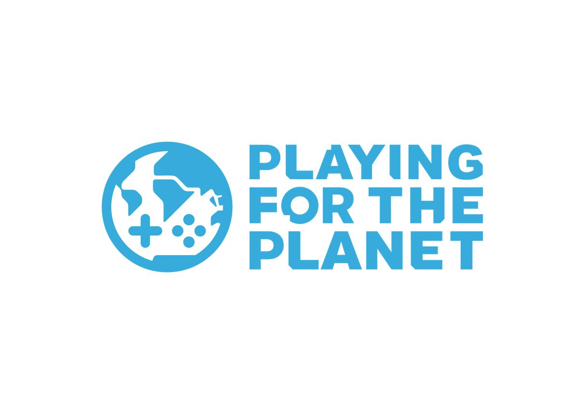
Le programme
Play the Good Game
« Play the Good Game » est le programme de responsabilité sociétale de Gameloft. Il repose sur trois piliers : l'environnement, la société et les collaborateurs. Gameloft a rejoint l'alliance Playing for the Planet en 2021 et participe à sa Green Game Jam depuis 2022.
Leurs parcours
Chronologie
2021
Adhésion à Playing for the Planet
Gameloft rejoint l'alliance Playing for the Planet, facilitée par le Programme des Nations unies pour l'environnement (PNUE). L'entreprise s'engage notamment à participer à la Green Game Jam en 2022 et à contribuer à la réduction de ses émissions de carbone.
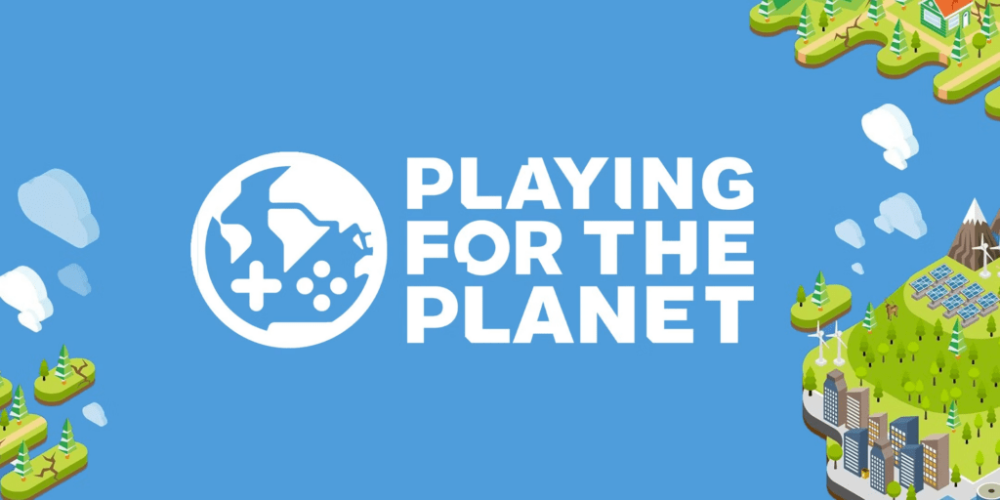
2022
Première participation à la Green Game Jam
Après avoir rejoint l'alliance en 2021, Gameloft s'engage à participer à la Green Game Jam à partir de 2022. Le principe est d'intégrer dans un jeu existant un contenu qui sensibilise les joueurs à un enjeu environnemental.
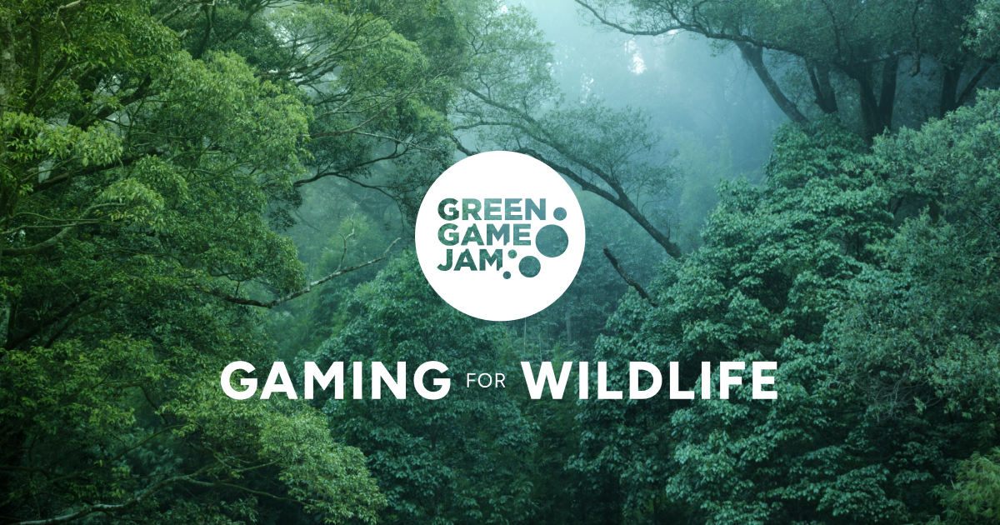
2024
Dragon Mania Legends récompensé
Pour la Green Game Jam 2024, Dragon Mania Legends propose un événement consacré au recyclage des piles. Les joueurs les ramassent dans le jeu avec le Battery Dragon, et une fonction de réalité augmentée les aide à repérer chez eux les piles à déposer dans une filière adaptée. Le jeu reçoit le prix du PNUE et le prix de Google.
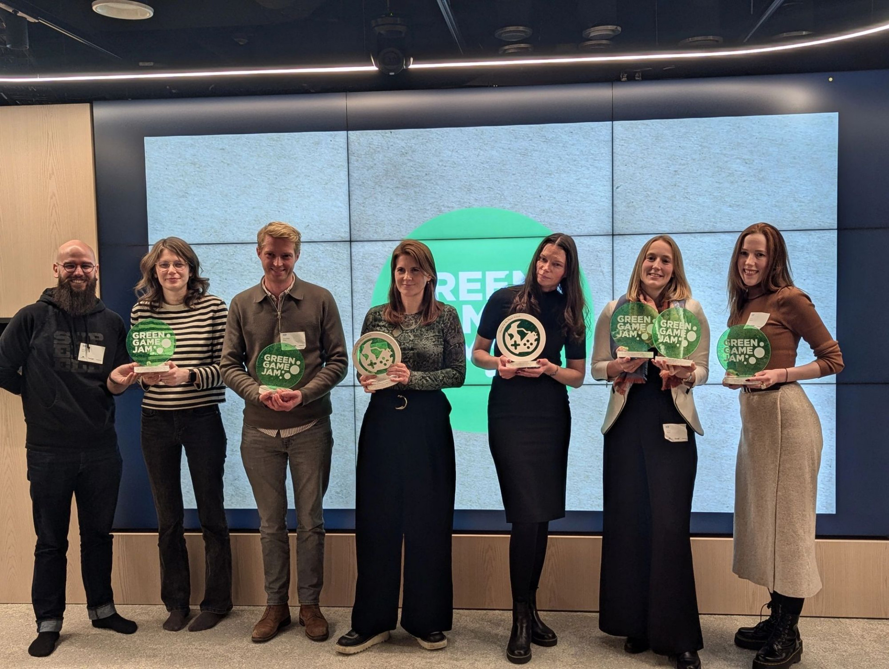
2024
Lancement des CSR Days
En avril 2024, Gameloft lance les CSR Days, une initiative qui invite les équipes à participer à des actions concrètes. Selon les studios, les activités comprennent des collectes pour recycler ou donner des objets, des défis de marche, des nettoyages collectifs et des plantations d'arbres.
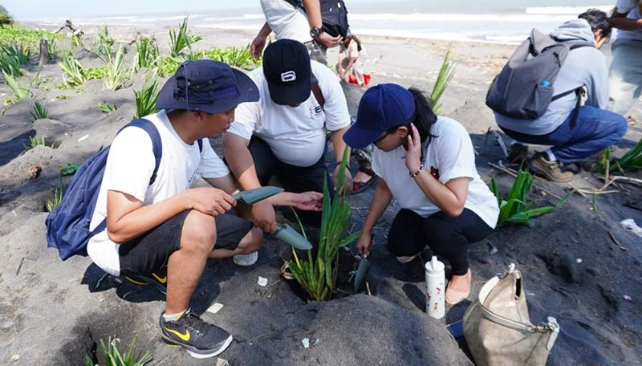
2024
Quatre studios passent aux énergies renouvelables
Gameloft indique qu'en 2024, quatre de ses studios sont passés à des sources d'énergie renouvelable. L'entreprise prévoit de faire passer les autres studios à ces sources d'énergie d'ici 2030.
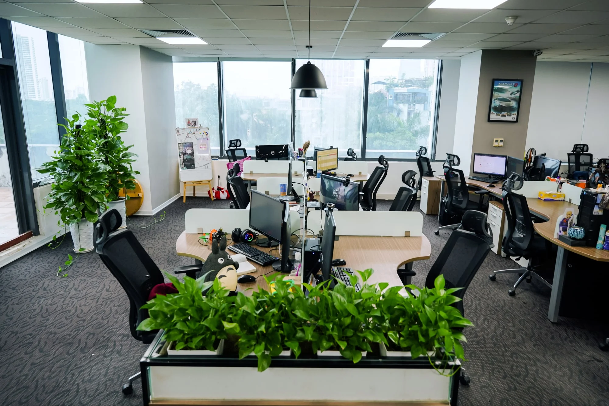
Depuis 2022
La Green Game Jam revient chaque année
Gameloft indique participer chaque année à la Green Game Jam depuis 2022. Ces événements abordent différents sujets environnementaux et cherchent à encourager les joueurs à adopter des comportements plus responsables.
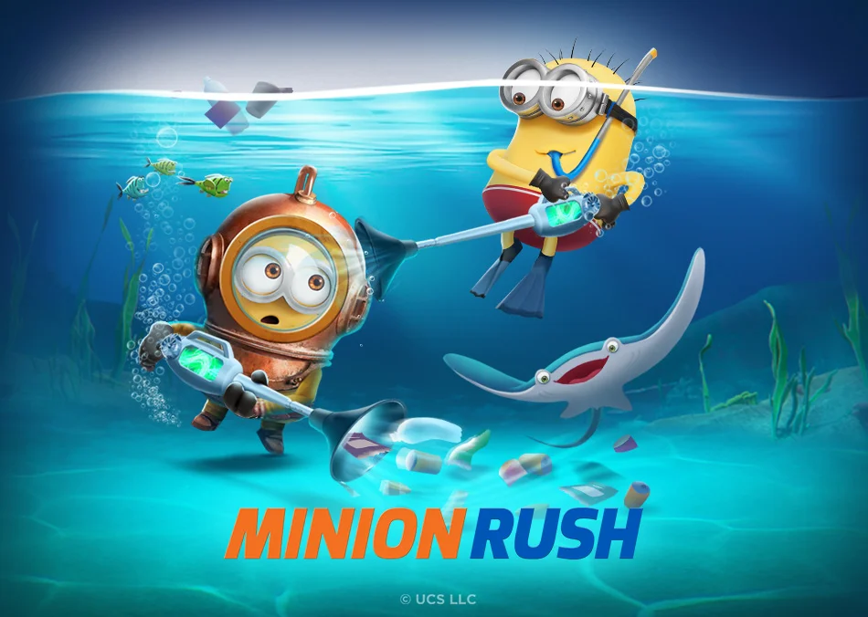
Demain
Cap 2030 : passer aux énergies renouvelables
Gameloft prévoit de faire passer l'ensemble de ses studios restants à des sources d'énergie renouvelable d'ici 2030. L'entreprise indique également vouloir réduire son empreinte carbone et continuer à sensibiliser les joueurs aux enjeux environnementaux.
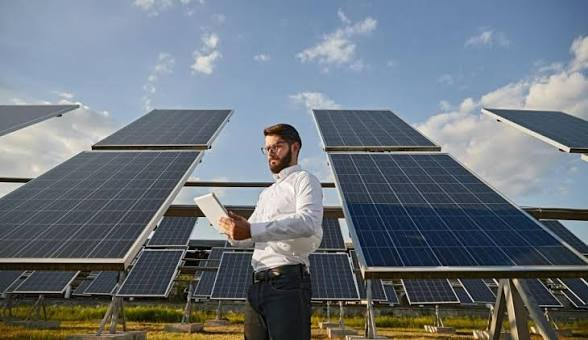
Concrètement
Nos actions
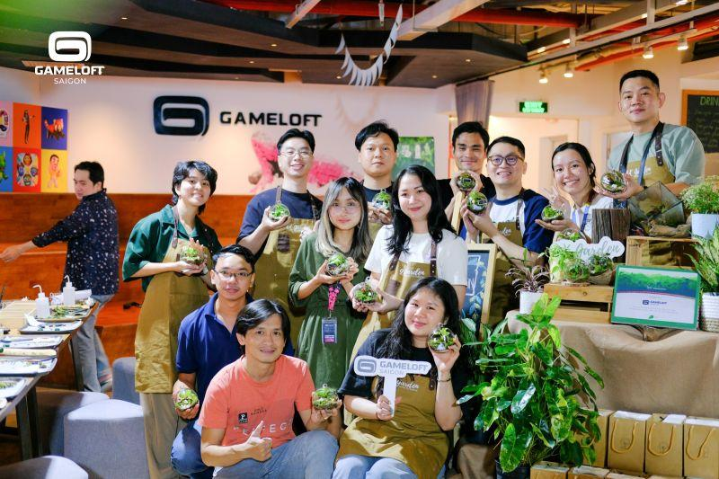
Des actions locales, un impact global
Gameloft indique que ses studios mettent en place des pratiques pour rendre leurs espaces de travail plus respectueux de l'environnement. Les actions citées comprennent notamment le recyclage du matériel informatique, les fontaines à eau pour remplacer les bouteilles en plastique et l'utilisation d'ampoules LED.
.jpg)
Recycler le matériel informatique
Gameloft indique que ses studios mettent en place des pratiques de recyclage du matériel informatique afin de limiter les déchets électroniques.
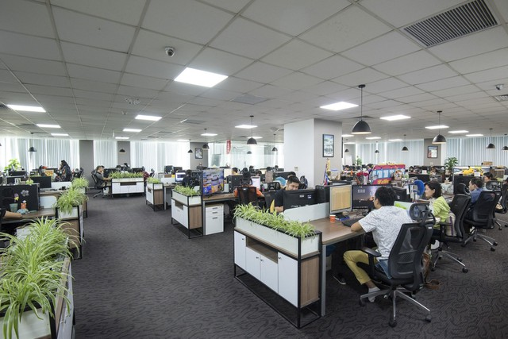
Réduire la consommation d'énergie
Gameloft cite notamment l'utilisation d'ampoules LED et la présence de certains studios dans des bâtiments écocertifiés. L'entreprise prévoit aussi de faire passer ses studios restants aux énergies renouvelables d'ici 2030.
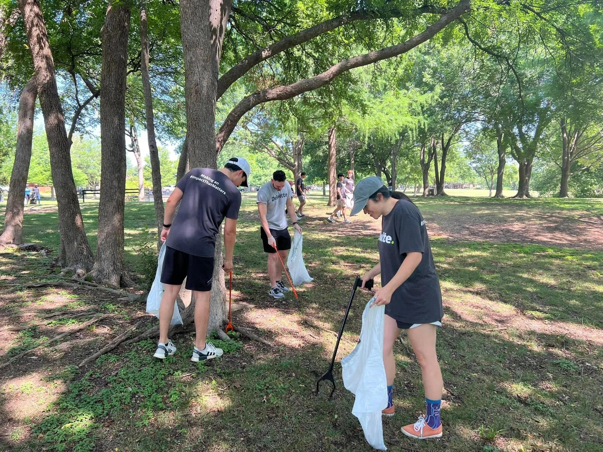
Agir sur le terrain
Dans le cadre des CSR Days lancés en 2024, certains studios organisent des nettoyages collectifs ou des plantations d'arbres, selon les initiatives locales.
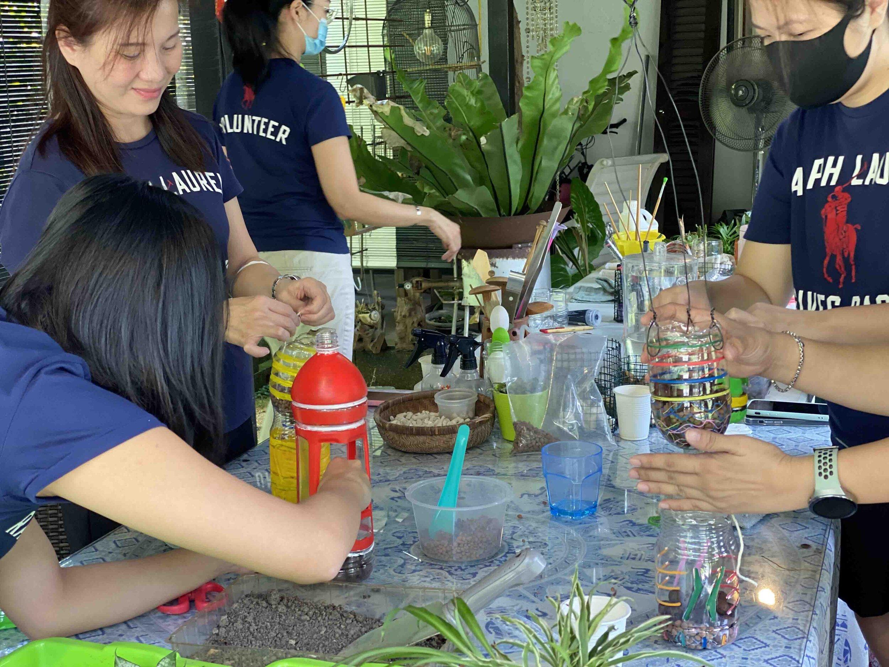
Sensibiliser les collaborateurs
Les CSR Days proposent aussi des collectes d'objets à recycler ou à donner et des défis de marche. Gameloft encourage ses équipes à adopter de meilleures pratiques au bureau et à la maison.
Le jeu au service de la planète
Jeux & Environnement
Chez Gameloft, les jeux ne font pas seulement rêver : ils appellent aussi à l'action. La preuve avec deux projets qui mettent les joueurs au défi de protéger la planète... en s'amusant.
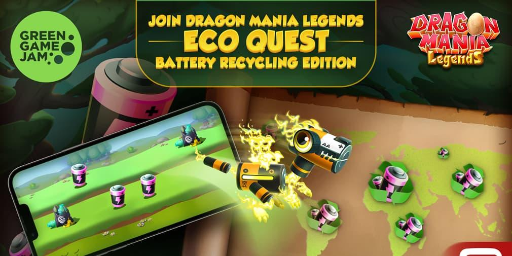
La Green Game Jam
Chaque année, le Programme des Nations unies pour l'environnement (PNUE) lance un défi aux plus grands studios du monde, dans le cadre de son initiative Playing for the Planet.
Le principe ? Créer un événement dans un jeu existant autour d'un enjeu environnemental. Pas de discours moralisateur : le joueur découvre le sujet en jouant.
Gameloft participe à la Green Game Jam chaque année depuis 2022.
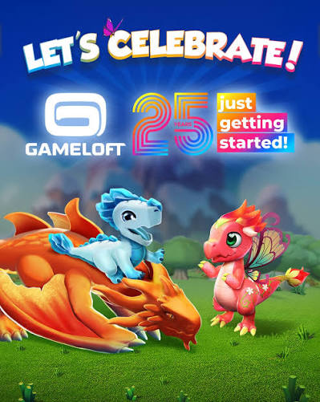
Dragon Mania Legends : le recyclage en jeu
En 2024, Dragon Mania Legends a transformé le recyclage des piles en aventure, avec le Battery Dragon et une fonction de réalité augmentée. Le jeu a reçu le prix du PNUE et le prix de Google.
1 Le problème : une pile jetée n'importe où pollue la nature.
2 Dans le jeu : le joueur collecte les piles usagées.
3 Dans la vraie vie : la fonction de réalité augmentée aide à repérer les piles à déposer dans une filière adaptée.
.jpg)
Un succès qui parle de lui-même
En 2024, Dragon Mania Legends a remporté le prix du PNUE et le prix de Google dans le cadre de la Green Game Jam. Il s'agissait de la troisième participation consécutive de Gameloft à ce défi.
Un événement en jeu pour attirer l'attention sur le recyclage des piles et ses effets sur l'environnement.
Voir nos objectifsVers l'avenir
Nos objectifs
- Réduire les émissions de gaz à effet de serre liées aux achats, aux déplacements et à l'énergie
- Améliorer les pratiques environnementales dans les espaces de travail
- Faire passer les studios restants aux énergies renouvelables d'ici 2030
- Sensibiliser les joueurs grâce à la Green Game Jam et à d'autres actions
- Encourager les équipes et les fournisseurs à adopter des pratiques plus durables